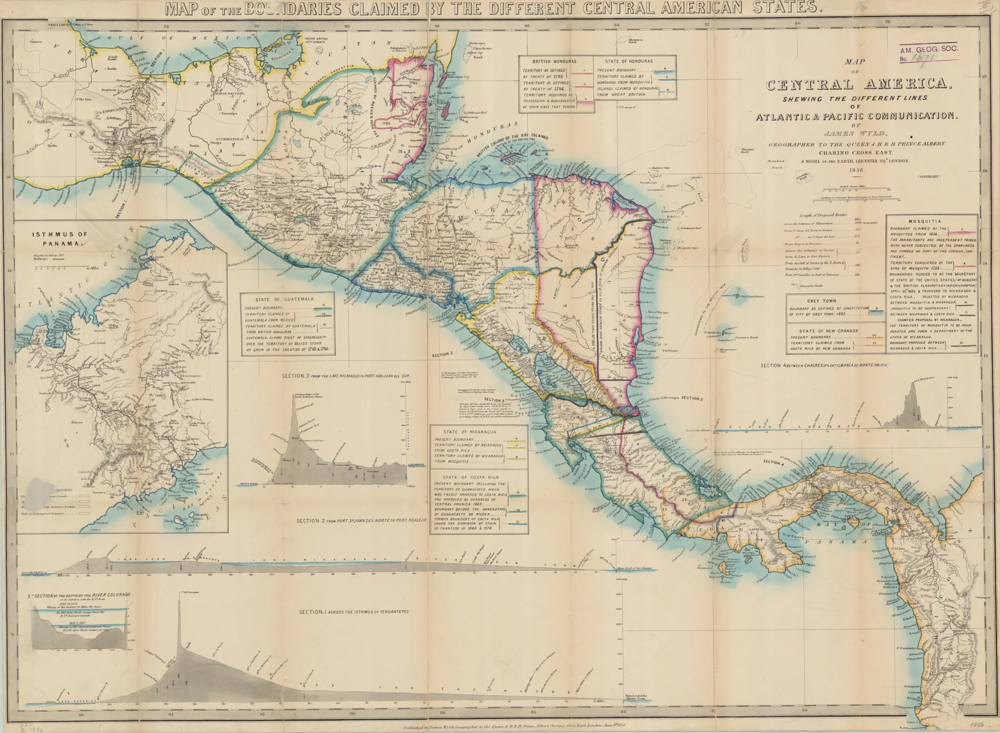
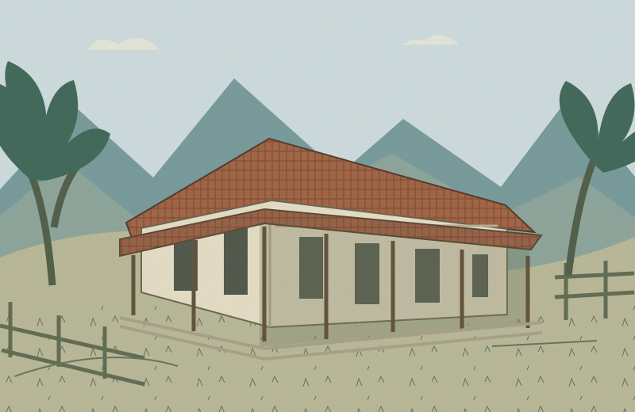

UN ARCHIVO VIVO DE NICARAGUA
Una historia
que todavía
nos une.
Hubo un día en que una hacienda cambió la historia. Descubrí las decisiones, las personas y la memoria de San Jacinto.
01 / EXPLORAR PARA ENTENDERDESLIZÁ PARA DESCUBRIR ↓
12° N / 86° O
TIPITAPA, NICARAGUA
TIPITAPA, NICARAGUA

ARCHIVO CARTOGRÁFICO / SIGLO XIX
14SEPTIEMBREMEMORIA QUE VIVE
UNA BATALLA.MUCHAS HISTORIAS.
MEMORIA✳IDENTIDAD✳SOBERANÍA✳CURIOSIDAD✳FUTURO
EL PASADO TIENE MÁS DE UNA ENTRADA
No hace falta memorizar.
Hace falta mirar de cerca.
Seguí una pista, conocé a sus protagonistas y volvé a las fuentes. Este museo se recorre a tu ritmo.
1855—1857 / LA GUERRA NACIONAL
Antes de una victoria,
hubo un país dividido.
La llegada de William Walker transformó una guerra civil en una amenaza a la soberanía. Conocer lo que pasó antes ayuda a entender por qué San Jacinto sigue importando.
Ver la línea del tiempo →MÁS ALLÁ DE LOS NOMBRES
La historia la hacen
las personas.
Conocer a los protagonistas ↗UN RETO PARA TU CURIOSIDAD
¿Qué tanto
descubriste?
Ocho preguntas. Nuevas conexiones.
Y una explicación detrás de cada respuesta.